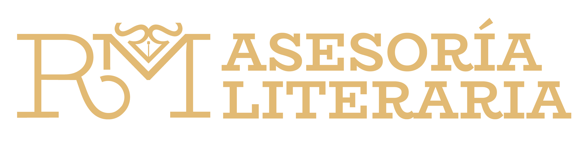

Acompañar al autor o la autora en su proceso de escritura es una tarea que apasiona a cualquier editor o asesor literario. Sin importar si el manuscrito está terminado o no, el objetivo principal siempre será el mismo: potenciar la obra, aumentar sus posibilidades de publicación puliendo cada detalle
